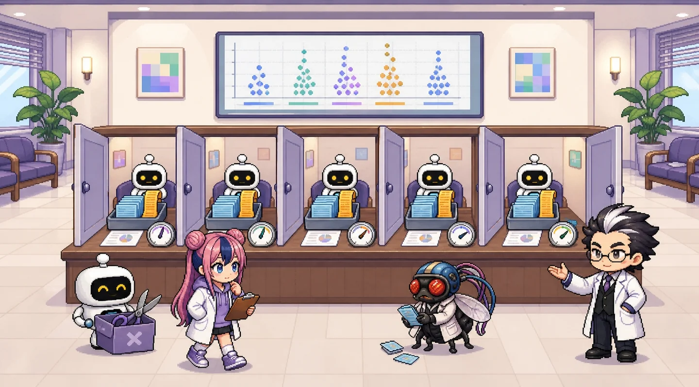

과제 문항 1Assignment 1
무엇을 내야 하는지 먼저 확인합니다.
이상치를 지우지 않고 5-Fold 교차검증 기준 회귀 성능 산출
- IQR 기준 행 삭제, 윈저라이징(상·하한 절단) 등으로 고액 보험료를 지우거나 깎지 않고 원본 데이터를 사용. 중복 1건의 처리 여부는 직접 판단하고 근거를 밝힘
- 성능은 5-Fold 교차검증 기준. 홀드아웃 1회 결과만 제출하면 감점
- 최소 2개 회귀 모델(선형 계열 1개 + 트리 계열 1개 이상)을 각각 원래 charges 와 log(charges) 타깃으로 학습해 4가지 조합을 비교
- 조합별로 Fold별 RMSE · MAE · R² 5개 + 평균 ± 표준편차를 표로 제출
- 로그 타깃 모델은 예측값을 np.exp() 로 달러로 되돌린 뒤 평가. 로그 척도 R² 와 달러 척도 R² 를 나란히 적고 왜 다른지 설명
- 이 데이터에서 R² 하나만 보고하면 왜 위험한지 수치 근거와 함께 서술
이 편에서는 모델 다섯 개(선형 · 릿지 · 의사결정나무 · KNN · 그래디언트 부스팅) × 타깃 두 가지 = 10가지 조합과 기준선으로 위 여섯 가지를 모두 채웁니다. 숫자는 모두 정식 코드 f1.py 를 실제로 실행한 결과입니다.
과제 안내는 KFold(5) 를 요구하지만, 이 시리즈는 한 단계 더 엄격하게 charges 10분위로 층화한 StratifiedKFold(n_splits=5, shuffle=True, random_state=42) 를 씁니다. 고액 고객이 fold 마다 고르게 들어가게 하기 위해서입니다(아래 1번 섹션).
1부 1편 복습모두에게 평균만: 평균의 함정
기준선 · MAE · R² · 고액 오차의 뜻을 먼저 복습하세요.
1부 3편 복습모델 다섯, 곡선 다섯
모델 다섯 개의 성격과, 시험 268명 한 번으로 잰 성능표.
다섯 조각으로 나누기Stratified 5-fold by charges decile
어떻게 나누느냐에 따라 fold 의 고액 고객 수가 달라집니다.
5-Fold 교차검증은 데이터를 다섯 조각으로 나눠, 한 조각씩 돌아가며 검증지로 쓰고 나머지 네 조각으로 학습합니다. 1,337명 모두 정확히 한 번 검증을 받습니다. 회귀에는 “클래스”가 없으니, 금액을 10개 구간으로 나눈 번호를 층화 기준으로 씁니다.
fold별 고액(상위 10%) 고객 수
세로선 = 고르게 나눴을 때 26.8명
fold별 검증 데이터 평균 의료비 · 흡연자 수

(손바닥을 든다) …이 데이터는 금액 순서로 정렬돼 있지 않아서, 섞지 않아도 여행자보험 때처럼 심하게 쏠리지는 않습니다. 그래도 섞은 KFold 의 고액 고객 수는 fold 마다 22~36명, 층화하면 26~27명입니다. 꼬리가 긴 금액일수록 층화가 점수를 덜 흔들리게 합니다.
fold별 점수 5개 + 평균 ± 표준편차Per-fold scores
과제가 요구하는 표 그대로입니다. 지표와 타깃을 바꿔 보세요.
점 5개 = fold 1~5, 굵은 세로 막대 = 평균, 옅은 띠 = 평균 ± 표준편차(ddof=1). 기준선은 로그 타깃이 없어 원래 charges 값을 그대로 보여 줍니다.


지표를 골라 주세요.
삐빅, 다섯 번 채점 중…
로그로 학습한 선형 모델, 달러로 되돌리니 R² 가 뚝 떨어졌어요!
기준선은 R² 0… 모두에게 평균만 말한 거예요.
삐빅! fold 다섯 번 모두 기준선보다 훨씬 작은 오차.
로그 척도 R² vs 달러 척도 R²Same model, two R²
같은 예측인데 어느 척도로 채점하느냐에 따라 R² 가 달라집니다.
| log(charges) 로 학습한 모델 | R² (로그 척도) | R² (달러로 되돌림) | 차이 |
|---|---|---|---|
| 선형 회귀 | 0.7633 | 0.5106 | -0.2527 |
| 릿지 | 0.7633 | 0.5123 | -0.2510 |
| 의사결정나무 | 0.8215 | 0.8484 | +0.0269 |
| KNN | 0.7980 | 0.7837 | -0.0143 |
| 그래디언트 부스팅 | 0.8356 | 0.8561 | +0.0205 |
5-Fold 평균. 로그 척도 R² 는 log(실제)와 로그 예측을, 달러 척도 R² 는 실제와 exp(로그 예측)을 비교합니다.
왜 다를까
- 로그 척도에서는 $1,000 → $2,000 과 $30,000 → $60,000 이 똑같은 크기의 오차(두 배)입니다. 달러 척도에서는 뒤의 것이 30배 큰 오차입니다.
- 선형 모델은 흡연 × 비만으로 생기는 고액 꼬리를 못 잡는데, 로그 척도는 그 꼬리의 오차를 작게 보여 줍니다. 되돌리면 그대로 드러납니다(R² 0.763 → 0.511).
- exp(로그 예측)은 평균이 아니라 중앙값 쪽을 맞힙니다. 3편에서 보정합니다.
R² 하나만 보고하면 위험한 이유 (수치 근거)
- 척도: 같은 선형 로그 모델이 로그 척도 R² 0.763, 달러 척도 0.511. 어느 쪽인지 밝히지 않으면 비교할 수 없습니다.
- 순위가 엇갈림: 그래디언트 부스팅의 원래/로그 타깃은 R² 0.860 / 0.856 로 거의 같지만, MAE 는 $2,448 / $2,135, RMSE 는 $4,501 / $4,562 로 순위가 반대입니다.
- 흔들림: 같은 모델의 fold별 R² 가 0.812 ~ 0.891 로 움직입니다. 한 번 잰 R² 는 이 범위 어디든 될 수 있습니다.
- 고액 고객: R² 0.747 인 선형 모델이 고액 상위 10% 134명을 모두 적게 잡습니다(2편).
1부의 숫자와 왜 다를까Test once vs 5-fold mean
같은 모델, 같은 데이터인데 숫자가 조금씩 다릅니다.
1부는 학습 1,069명으로 한 번 학습해 시험 268명으로 한 번 잰 숫자입니다. 2부는 1,337명을 다섯 조각으로 나눠 다섯 번 학습하고 다섯 번 잰 평균 ± 표준편차입니다. 학습에 쓴 사람(1,069명 vs fold 마다 약 1,070명)도, 채점한 사람(268명 vs 1,337명 전부)도 다르니 숫자가 다른 것이 정상입니다. 1부 숫자가 2부의 평균 ± 표준편차 범위 근처에 있으면, 1부의 시험 한 번이 운 나쁘거나 좋은 쪽으로 치우치지 않았다는 뜻입니다.
| 모델 (원래 charges) | 1부 시험 MAE (268명, 한 번) | 2부 5-Fold MAE (평균 ± 표준편차) | 1부 시험 R² | 2부 5-Fold R² |
|---|---|---|---|---|
| 기준선 (학습 fold 평균) | $9,151 | $9,093 ± $171 | -0.000 | -0.000 ± 0.000 |
| 선형 회귀 | $4,212 | $4,206 ± $180 | 0.748 | 0.747 ± 0.031 |
| 릿지 | $4,213 | $4,207 ± $179 | 0.748 | 0.747 ± 0.031 |
| 의사결정나무 | $2,646 | $2,682 ± $142 | 0.857 | 0.852 ± 0.024 |
| KNN | $3,306 | $3,480 ± $229 | 0.803 | 0.788 ± 0.032 |
| 그래디언트 부스팅 | $2,470 | $2,448 ± $144 | 0.860 | 0.860 ± 0.032 |
1부의 숫자는 시험 데이터 한 번, 2부의 숫자는 fold 평균입니다. 둘이 다른 것은 정상입니다.
지우지 않고, 자르지 않은 근거What we kept and why
과제의 서술 요구: 무엇을 했고 왜 했는지.
| 항목 | 처리 | 근거 |
|---|---|---|
| 완전히 같은 행 | 1건 뺌 (원본 582번째 행이 196번째 행과 7개 열 모두 같음) | 같은 사람이 학습 fold 와 검증 fold 에 동시에 들어가면 그 사람은 ‘외운 답’으로 채점됩니다. 1,338 → 1,337행 |
| charges 고액 (IQR 기준 139명) | 그대로 둠 · 자르지 않음 | 고액 의료비는 입력 오류가 아니라 꼬리입니다. 지우면 흡연자 · 고액 고객을 맞히는 능력을 잴 수 없습니다 |
| bmi IQR 밖 (9명, 최대 53.13) | 그대로 둠 | 사람에게 가능한 값입니다 |
| 결측 | 없음 | 7개 열 모두 비어 있는 칸이 없습니다 |
| 치우친 금액 | log(charges) 타깃을 함께 비교 | 행을 바꾸지 않고 학습 목표만 바꿉니다. 평가는 달러로 되돌려서 |
| 표준화 | Pipeline(StandardScaler → 모델) | fold 마다 학습 데이터로만 평균 · 표준편차 계산(누수 방지) |
| 데이터 증강 | 쓰지 않음 | 합성 행 · 행 복제 · 정답에 잡음 넣기 없음. 원본 1,337행만 |
보고서 답안 틀Answer template
이 편의 결과를 과제 답안 형식으로.
표 1. 5-Fold 교차검증 결과 (charges 10분위 층화 StratifiedKFold, n_splits=5, shuffle=True, random_state=42, 이상치 삭제 없음, 달러 척도)
| 모델 × 타깃 | MAE | RMSE | R² (달러) | R² (로그 척도) |
|---|---|---|---|---|
| 선형 회귀 · charges | [ ] ± [ ] | [ ] ± [ ] | [ ] ± [ ] | — |
| 선형 회귀 · log(charges) | [ ] ± [ ] | [ ] ± [ ] | [ ] ± [ ] | [ ] |
| 그래디언트 부스팅 · charges | [ ] ± [ ] | [ ] ± [ ] | [ ] ± [ ] | — |
| 그래디언트 부스팅 · log(charges) | [ ] ± [ ] | [ ] ± [ ] | [ ] ± [ ] | [ ] |
| 기준선 (학습 fold 평균) | [ ] ± [ ] | [ ] ± [ ] | [ ] ± [ ] | — |
서술 틀. “고액 의료비 [ ]명(IQR 기준)은 입력 오류가 아니라 [ ]이므로 지우지 않았다. 완전히 같은 행 [ ]건은 [ ] 때문에 뺐다. 로그 타깃 선형 모델의 R² 는 로그 척도에서 [ ], 달러로 되돌리면 [ ]로, 같은 예측도 [ ]에 따라 R² 가 달라진다. 또 그래디언트 부스팅의 두 타깃은 R² 가 [ ]와 [ ]로 비슷하지만 MAE 는 [ ]와 [ ]로 다르다. 따라서 R² 하나로는 [ ]을/를 판단할 수 없어 MAE · RMSE 와 기준선을 함께 보고한다.”
fold별 5개 점수 표는 위 “fold별 점수” 섹션에서 지표 · 타깃을 바꿔 가며 옮기면 됩니다. 숫자는 반드시 본인이 실행한 값으로.
확인 문제Check
정답을 고르면 해설이 나옵니다.
Q1. 회귀 문제에서 StratifiedKFold 를 쓰려면 무엇을 기준으로 층화해야 할까요?
Q2. log(charges) 로 학습한 선형 모델의 R² 가 로그 척도에서 0.763, 달러로 되돌리면 0.511 입니다. 보고서에 쓸 숫자는?
Q3. 그래디언트 부스팅 원래 타깃은 MAE $2,448 · RMSE $4,501, 로그 타깃은 MAE $2,135 · RMSE $4,562 입니다. 올바른 해석은?
Q4. 1부 시험 데이터에서 그래디언트 부스팅의 MAE 는 $2,470, 2부 5-Fold 평균은 $2,448 ± $144 입니다. 왜 다를까요?
실무로 잇기From page to Colab
이 페이지의 숫자를 만든 코드.
e1.py 는 함수 · 반복문 · if · 들여쓰기 없이 cross_validate 로 선형 · 그래디언트 부스팅의 fold 점수와 로그 타깃(TransformedTargetRegressor)을 냅니다. f1.py 는 모델 다섯 × 타깃 둘 · 분할 비교 · 1부 비교, 그리고 2 · 3편이 쓸 검증 예측 data/oof_predictions.csv 까지 만듭니다.
실행 결과 보기 (정식 코드 f1.py 를 실제로 실행한 출력)
rows=1337 dropped duplicate rows=[581] charges IQR flagged (kept)=139
[split compare] validation-fold charges mean / smokers / top10 count
KFold (no shuffle) mean: [13622, 13049, 12927, 13401, 13396] smokers: [64, 46, 49, 57, 58] top10: [31, 24, 25, 28, 26]
KFold (shuffle) mean: [14272, 12974, 13325, 12839, 12982] smokers: [60, 44, 56, 60, 54] top10: [36, 28, 22, 22, 26]
Stratified by charges decile mean: [13207, 13306, 13333, 13488, 13062] smokers: [52, 50, 57, 55, 60] top10: [27, 27, 27, 26, 27]
[MAE] fold 1~5, mean, std (dollar scale)
fold 1 2 3 4 5 mean std
model target
Baseline raw 8946.0 9079.0 9155.0 9350.0 8933.0 9093.0 171.0
Linear raw 4479.0 4130.0 4060.0 4294.0 4067.0 4206.0 180.0
log 4514.0 4565.0 4200.0 4237.0 3888.0 4281.0 273.0
Ridge raw 4480.0 4131.0 4061.0 4295.0 4068.0 4207.0 179.0
log 4512.0 4559.0 4189.0 4234.0 3883.0 4276.0 273.0
Decision Tree raw 2844.0 2814.0 2629.0 2617.0 2508.0 2682.0 142.0
log 2557.0 2639.0 2365.0 2305.0 2129.0 2399.0 203.0
KNN raw 3483.0 3184.0 3428.0 3827.0 3479.0 3480.0 229.0
log 3210.0 2925.0 3029.0 3435.0 3080.0 3136.0 196.0
Gradient Boosting raw 2637.0 2544.0 2338.0 2429.0 2290.0 2448.0 144.0
log 2394.0 2191.0 1954.0 2152.0 1984.0 2135.0 178.0
[RMSE] fold 1~5, mean, std (dollar scale)
fold 1 2 3 4 5 mean std
model target
Baseline raw 11746.0 12145.0 12245.0 12625.0 11750.0 12102.0 370.0
Linear raw 6463.0 6096.0 5727.0 6405.0 5710.0 6080.0 358.0
log 8597.0 8864.0 8634.0 8730.0 7458.0 8457.0 568.0
Ridge raw 6463.0 6096.0 5726.0 6406.0 5709.0 6080.0 359.0
log 8590.0 8847.0 8608.0 8720.0 7442.0 8441.0 568.0
Decision Tree raw 5019.0 4867.0 4427.0 4807.0 4120.0 4648.0 367.0
log 5155.0 4948.0 4459.0 4881.0 4020.0 4693.0 453.0
KNN raw 5804.0 5275.0 5179.0 6304.0 5263.0 5565.0 482.0
log 5940.0 5360.0 5142.0 6367.0 5255.0 5613.0 522.0
Gradient Boosting raw 5089.0 4740.0 4049.0 4718.0 3909.0 4501.0 501.0
log 5179.0 4787.0 4044.0 4839.0 3964.0 4562.0 532.0
[R2] fold 1~5, mean, std (dollar scale)
fold 1 2 3 4 5 mean std
model target
Baseline raw -0.0001 -0.0000 -0.0000 -0.0004 -0.0005 -0.0002 0.0002
Linear raw 0.6973 0.7481 0.7813 0.7425 0.7637 0.7466 0.0314
log 0.4643 0.4674 0.5027 0.5217 0.5969 0.5106 0.0540
Ridge raw 0.6973 0.7481 0.7813 0.7425 0.7638 0.7466 0.0314
log 0.4652 0.4694 0.5058 0.5228 0.5986 0.5123 0.0540
Decision Tree raw 0.8174 0.8394 0.8693 0.8550 0.8770 0.8516 0.0239
log 0.8074 0.8340 0.8674 0.8505 0.8829 0.8484 0.0293
KNN raw 0.7558 0.8114 0.8211 0.7506 0.7993 0.7876 0.0324
log 0.7443 0.8052 0.8237 0.7456 0.7999 0.7837 0.0365
Gradient Boosting raw 0.8123 0.8477 0.8907 0.8603 0.8893 0.8600 0.0325
log 0.8056 0.8447 0.8909 0.8531 0.8861 0.8561 0.0347
[R2 log scale vs dollar scale] (log-target models, mean of 5 folds)
R2_log_scale R2_dollar
model
Linear 0.7633 0.5106
Ridge 0.7633 0.5123
Decision Tree 0.8215 0.8484
KNN 0.7980 0.7837
Gradient Boosting 0.8356 0.8561
[part 1 test (268 people, once)]
MAE RMSE R2
model
Baseline 9151.0 12005.0 -0.0001
Linear 4212.0 6027.0 0.7479
Ridge 4213.0 6026.0 0.7480
Decision Tree 2646.0 4543.0 0.8568
KNN 3306.0 5332.0 0.8027
Gradient Boosting 2470.0 4496.0 0.8597
oof saved: data/oof_predictions.csv rows=1337AI와 함께 더 공부하기AI tutor prompt
ChatGPT·Claude·Gemini 등에 그대로 붙여 넣으세요. [ ] 안만 바꾸면 됩니다.
# 역할 당신은 보험 데이터 분석을 가르치는 친절한 튜터입니다. 저는 「AI(인공지능) x 비즈니스 #1 인슈어테크_04_회귀모델_실전」 2부 1편(과제 문항 1) 「이상치를 지우지 않고 5-Fold로 성능 재기」을 공부하고 있습니다. # 배경 - 데이터: 공개 학습용 건강보험 의료비 데이터 1,338행 (https://raw.githubusercontent.com/fintech-data/Revolution/main/data/insurance.csv) - 열: age(나이) · sex(성별) · bmi(체질량지수) · children(자녀 수) · smoker(흡연 여부) · region(미국 내 지역 4곳) · charges(1년 의료비 청구 금액, 달러 = 맞힐 대상) - 완전히 같은 행 1건을 빼고 1,337행을 씁니다. 목표값 charges 는 자르거나 고치지 않습니다(고액은 오류가 아니라 꼬리). - 검증은 charges 10분위로 층화한 StratifiedKFold(n_splits=5, shuffle=True, random_state=42) 입니다. fold별 점수 5개와 평균 ± 표준편차를 냅니다. - 기준선: 모두에게 학습 데이터 평균만 답하기 (R² = 0 근처) - 내 수준: [예: 파이썬은 조금, 통계는 처음] # 해 줄 일 1. charges 10분위 층화 5-Fold 로 선형 회귀와 그래디언트 부스팅의 fold별 MAE · RMSE · R² 표를 만들게 도와 주세요. 2. log(charges) 로 학습하고 np.exp 로 되돌려 달러로 평가하는 코드를 TransformedTargetRegressor 로 보여 주세요. 3. 제 결과에서 로그 척도 R² 와 달러 척도 R² 가 왜 다른지 설명해 주세요. 4. R² 하나만 보고하면 안 되는 이유를 제 숫자 세 개로 정리하게 도와 주세요(답을 쓰지 말고 질문으로). # 반드시 지킬 것 - 기호나 약어(MAE, RMSE, R² 등)는 처음 나올 때 한 줄로 설명하기 - 데이터 증강(합성 행 · 행 복제 · 정답에 잡음 넣기)은 쓰지 않기 - 전처리(표준화 · 인코딩)는 Pipeline 안에서 학습 데이터에만 fit (데이터 누수 금지) - 여유분 · 하이퍼파라미터는 학습 데이터의 교차검증으로만 고르기 (시험 데이터는 마지막에 한 번만) - R² 하나만 보고하지 않기: MAE · RMSE · 고액(상위 10%) MAE · 과소 추정 비율을 기준선과 함께 - 로그 변환을 썼다면 예측을 달러로 되돌려 평가하기 - 코드는 Google Colab 에서 바로 실행되게, random_state=42 고정, 내가 바꿀 줄에는 # [변경] 주석 내 결과: [숫자 붙여 넣기 — fold별 점수와 평균 ± 표준편차] 내가 쓴 문장: [붙여 넣기] # 답변 형식 1) 내 숫자를 기준선과 비교해 해석 2) 내 문장에서 틀리거나 과장된 곳 3) 답을 바로 주기 전에, 내가 스스로 확인할 질문 3개
용어 사전Glossary
비유로 먼저, 뜻은 그다음.
- 교차검증 (K-Fold)
- 돌아가며 시험 보기. 데이터를 K 조각으로 나눠 한 조각씩 검증에 쓰고 나머지로 학습. 모든 행이 한 번씩 검증된다.
- 분위 층화
- 금액 구간마다 고르게 나누기. charges 를 10구간으로 나눈 번호로 StratifiedKFold. 고액 고객이 fold 마다 고르게.
- 평균 ± 표준편차
- 점수와 흔들림. fold 5개 점수의 평균과 표본 표준편차(ddof=1).
- 검증 예측 (OOF)
- 학습에 안 쓴 예측. 각 사람이 검증 fold 에 있을 때 받은 예측. 2 · 3편에서 그룹별 오차를 잰다.
- 로그 타깃
- 곱하기를 더하기로. log(charges) 를 맞히고 exp 로 되돌린다. 되돌린 값은 평균이 아니라 중앙값 쪽.
- 로그 척도 R²
- 비율로 채점한 R². log(실제)와 로그 예측의 R². 고액 고객의 큰 달러 오차가 작게 보인다.
- 기준선
- 아무것도 안 했을 때의 점수. 학습 fold 평균만 답하기. 5-Fold MAE $9,093, R² ≈ 0.
- 누수
- 시험 문제를 미리 보기. 검증 데이터의 정보가 학습에 섞이는 것. 표준화를 Pipeline 안에 넣어 막는다.
글 · 안상선 ((주)M-Robo 대표)
(주)M-Robo 대표. 금융·보험 데이터와 AI를 현장에서 쓰는 방법을, 버튼만 눌러 따라 할 수 있는 교재로 만듭니다.
수고하셨습니다!

- 10분위 층화 5-Fold: 그래디언트 부스팅 MAE $2,448 ± $144, 선형 $4,206 ± $180, 기준선 $9,093 ± $171 (달러)
- 같은 선형 로그 모델이 로그 척도 R² 0.763, 달러 척도 0.511 — R² 는 척도를 밝히고, MAE · RMSE 와 함께
- 1부(시험 한 번)와 2부(5-Fold 평균)의 숫자가 다른 것은 정상. 1부 값이 2부 범위 근처인지 확인

다섯 번 재니까 숫자가 ‘하나’가 아니라 ‘범위’가 됐어요. 머니로보는 견적서 다섯 장을 아직 들고 있어요.

평균은 괜찮다는데, 흡연자만 따로 보면요? 저는 과일 가게에 가면 썩은 것만 골라 보거든요.